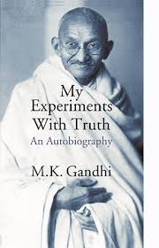

List of Courses in Winter Semester 2024-2025
- Web Development
- Data Algorithms and Analysis
- Data Algorithms and Analysis Lab
- Theory of Computation
- Computer Architecture and Organization
- Probability and Statistics
- Probability and Statistics Lab
- Microprocessors and Microcontrollers
- Microprocessors and Microcontrollers Lab
- Quantitative Skills II
- Japanese
List of some commonly known Programming Languages
- Python - 7/10
- Java - 6/10
- C++ - 6/10
- Javascript - 8/10
- HTML - 6/10
- CSS - 8/10
Reviews and Summaries
Favorite Movie: The Godfather
- Summary:
-
The Godfather follows Vito Corleone's Mafia family, focusing
on his son Michael's reluctant rise to power, dealing with loyalty,
betrayal and crime.
- Why I Like It:
-
The Godfather, unlike other movies, is more realistic, with many
intricacies based on the true nature of the world. It also focuses on
how small things can give greater meanings and cause powerful effects,
which is what I like the most.
Favorite Book: My Experiments with Truth
- Summary:
-
My Experiments with Truth is Mahatma Gandhi's autobiography,
detailing his spiritual journey, philosophy of non-violence, struggles
for independence, and personal reflections on morality,
self-discipline, and truth.
- Why I Like It:
-
I like it, firstly because it is interesting to read about the life of
the "Father of Our Nation." Also, it has various techniques and
incidents which are heartwarming and amazing, showing how a simple
common man defeated the Great British.

Favorite TV Show: Suits
- Summary:
-
Suits is a legal drama following talented college dropout Mike Ross,
who starts working as a law associate at a prestigious firm, despite
lacking a law degree. He teams up with top lawyer Harvey Specter,
navigating complex cases while maintaining the secret of Mike's
credentials. The show explores themes of loyalty, ambition, and
personal growth in the fast-paced legal world.
- Why I Like It:
-
I like Suits because of the real-world instances where a
person who came from nothing is able to outsmart and outplay people
who are seemingly at the top, all while staying humble and loyal to
the person who allowed him to reach such heights.